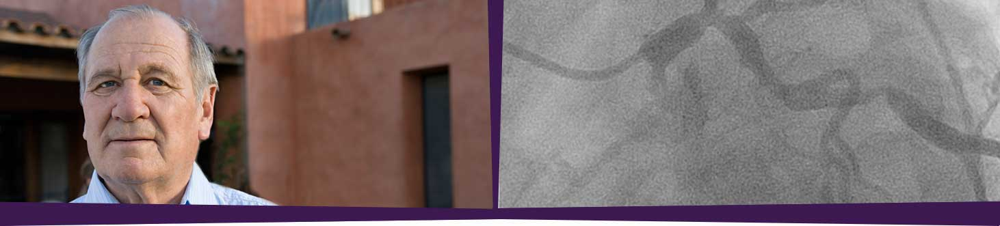

ACS, STEMI patient*
ACS, STEMI patient*-
Medical/
social history -
- Hypertension, hyperlipidemia, GERD, peptic ulcer, type 2 diabetes mellitus
- Smokes ½ pack of cigarettes per day, drinks 6 beers per week
- Home medications
-
- Simvastatin
40 mg daily - Lisinopril
10 mg daily - HCTZ
25 mg daily - Omeprazole
40 mg daily - Janumet XR
50/1000 mg daily
- Simvastatin
-
Examination/
labs -
- Height 177 cm, weight 97.7 kg, BMI 31
- Pulse 110 bpm,
BP 95/60 mmHg,
respiratory rate
18 breaths per minute; rales are present bilaterally - Glucose 154 mg/dL
-
Cardiac
imaging -
- Proximal LAD occlusion at the origin of the first diagonal branch
- LCX with focal 70% stenosis in medium-sized OM2
- Dominant RCA with 80% mid-RCA stenosis, 60% PDA stenosis
- LVEF 35% with moderate anterior and apical akinesis

History of present illness
- 66-year-old Caucasian male, retired construction worker
- Symptoms:
- Developed chest tightness radiating to left arm while shoveling snow followed by nausea, vomiting, and diaphoresis
- Despite taking antacids, symptoms persist for 2 hours
- EMS administers aspirin, oxygen, 2 mg IV morphine sulfate
- Field ECG reveals 3 mm anterior ST-elevation
- Action:
- Proceeded directly to cath lab for a PCI